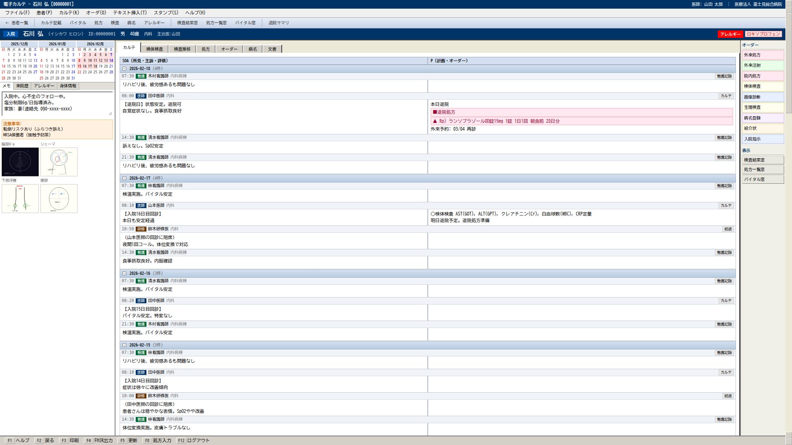
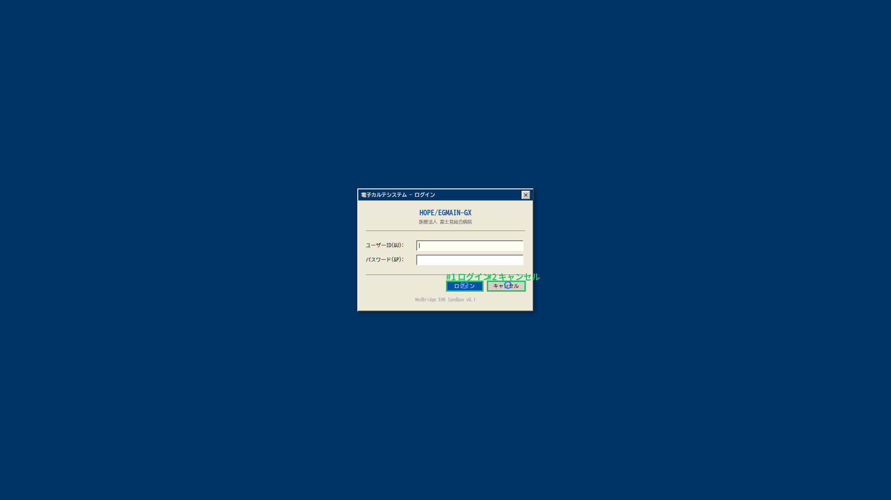

電子カルテのベンダーロックインを、画面操作 AI で迂回する話
「API を出してくれない」「カスタマイズ見積もりが数千万、納期 1 年」—— このご時世、人間が画面を見て操作できることを、AI に肩代わりさせる選択肢はないのか？ ローカル GPU 1 枚で動く OSS の視覚 AI で、どこまで現実的か実測した記録です。
TL;DR
- 電子カルテ（EMR）の業務自動化は、ベンダー API ではなく 画面操作 AI（VLM ベース computer-use エージェント） で迂回できる時代に入りつつある
- 自前で立てた EMR モック画面で、OSS の Qwen3.6-27B (Dense) + JSON Schema 制約 が GUI grounding 精度 84.4% を達成し、GUI 特化モデル Holo3-35B と並んだ
- 一方、同じ「Qwen3.6」でも MoE 構造の 35B-A3B（active 3B）は 6〜9% と壊滅。総パラ数ではなく active パラ数が天井を決める
- 「クリックできる場所を全部列挙する」タスク（キーワードヒントなし）の F1 は 0.53。完全自動化はまだ早く、Human-in-the-loop 前提の業務補助なら今すぐ実用射程
- 全部 A100 1 枚＋ローカル完結。画像が外に出ない構成なので医療情報安全管理ガイドラインとの整合説明もしやすい
なぜこの話を書くか：病院・ヘルスケア IT 部門の沈黙の負債
電子カルテのベンダーに「この画面のデータを CSV で吐けるようにして」と頼んだことがある人は分かると思います。返ってくる答えはだいたいこうです。
- 「カスタマイズ対応になります。見積もりは追ってご連絡します」（数百万〜数千万）
- 「次期バージョンで FHIR 対応を予定しています」（時期未定）
- 「ベンダー間連携は弊社の SaaS でのみ可能です」（実質ロックイン）
結果、画面では一瞬で見える情報 が機械的に取り出せず、転記・集計・部門間共有は人手のままです。退院サマリ、検査結果一覧、処方履歴、病名サマリ、紹介状作成——どれも「人が画面を見て、人が別の画面に打ち込む」が温存されています。
これに対して、近年急速に立ち上がってきたのが Computer-use 型の視覚言語モデル (VLM) です。Anthropic Claude Computer Use、Mind2Web、Holo3、Qwen3-VL シリーズ、UI-TARS など、「スクリーンショットを見て、クリック座標を返す」 モデルが揃ってきました。
つまり——ベンダー協力ゼロで、人間オペレータの仕事を肩代わりするエージェント が、技術的には現実になりつつあります。問題は「OSS でどこまで使えるのか」「自前 GPU で動くのか」「医療現場で安全に運用できるのか」です。
この記事は、その射程を実測した記録です。
実験設定：MedBridge サンドボックス
ベンダー製の本物の EMR で実験するわけにはいかないので、社内で 電子カルテ風の Web アプリケーション を作って計測台にしました。
- フロント: Next.js（病院 EMR っぽい 6 画面：ログイン／患者一覧／カルテ／検査結果／処方／病名）
- 起動: Electron で CDP (Chrome DevTools Protocol) を開き、headless Linux 上で Xvfb + openbox で表示
- 推論: A100 80GB 1 枚に llama.cpp llama-server (CUDA) で各種 VLM をロード
EMR 自動化エージェントに必要な能力を 3 つに分解して測ります。
| タスク | 何を測るか | 病院業務での意味 |
|---|---|---|
| Grounding | 「ログインボタンの座標を返して」のような指示で正しい場所をクリックできるか | 既知の操作シナリオを自動化できるか |
| OCR | 画面に表示された患者名・検査値を正確に読めるか | 転記・集計の精度 |
| Detection | キーワードなしで「クリック可能な要素」を全列挙できるか | 未知画面で自律的に動けるか（汎用 computer-use） |
比較したモデルは以下：
| モデル | 種別 | サイズ | 備考 |
|---|---|---|---|
| Holo3-35B-A3B | GUI 特化 VLM | MoE 35B (active 3B) | vLLM BF16、GUI grounding 専用学習 |
| Qwen3.6-35B-A3B | 汎用 VLM | MoE 35B (active 3B) | BF16 / Q8 両方 |
| Qwen3.6-27B | 汎用 VLM (Dense) | 27B 全部 active | BF16 / Q8 両方 |
すべてのテストで enable_thinking: false（Qwen3.6 のデフォ思考モードを切る）と JSON Schema による出力構造強制を行っています。後述しますが、これをやらないと結果が読めるレベルになりません。

結果 1：Grounding——「ボタンの場所、教えて」
最初に「画面のスクリーンショット＋『ログインの座標』のような指示」で正しい場所を当てられるかを 32 タスク × 6 画面で測りました。
| モデル | Hit率 | 平均ピクセル誤差 | 平均レイテンシ | 病院的に意味すること |
|---|---|---|---|---|
| Holo3-35B-A3B (GUI 特化) | 84.4% | 149 px | — | 既存 EMR 操作の自動化が「今すぐ」設計可能 |
| Qwen3.6-27B BF16 + JSON Schema | 84.4% | 127 px | 2.82 s/call | 汎用 OSS が GUI 特化と並んだ |
| Qwen3.6-27B Q8_0 + JSON Schema | 84.4% | 148 px | 3.32 s/call | 量子化でも精度ほぼ不変 |
| Qwen3.6-35B-A3B BF16 + JSON Schema | 6.3% | 376 px | 2.18 s/call | active 3B では grounding に不足 |
| Qwen3.6-35B-A3B Q8_0 + JSON Schema | 9.4% | 388 px | 1.94 s/call | 同上 |
画面別の grounding 精度（Holo3-35B、参考値）
| 画面 | 正解 / タスク数 |
|---|---|
| ログイン | 2/2 |
| 患者一覧 | 6/6 |
| カルテ | 5/6 |
| 検査結果 | 5/6 |
| 処方 | 5/6 |
| 病名 | 4/6 |


何を意味するか（経営／IT 部門目線）
- 「ベンダー画面のクリック自動化」を OSS スタックで設計できることが実測ベースで言える
- A100 1 枚で 1 クリック判断に 2〜3 秒。RPA 的な用途には十分速い
- OCR は全モデルで Recall 1.0、検査値・氏名読み取りは信頼できる水準
結果 2：MoE 35B が Dense 27B に負けた——調達担当者が知っておくべき罠
ここが今回一番面白い発見です。
同じ「Qwen3.6」シリーズで、サイズが大きいはずの 35B-A3B が、27B-Dense にダブルスコアどころか「桁違いに」負けました。
| モデル | 公称サイズ | active パラメータ | Grounding Hit率 |
|---|---|---|---|
| Qwen3.6-35B-A3B | 35B | 3B (MoE) | 6〜9% |
| Qwen3.6-27B (Dense) | 27B | 27B (全部 active) | 84.4% |
MoE (Mixture of Experts) は、合計パラメータが大きくても 1 トークンあたりに動く専門家は一部だけ という構造です。Qwen3.6-35B-A3B は active が 3B しかなく、その「3B 相当の推論能力」が画像と座標の幾何的対応付けに必要な容量に足りていない、と読めます。
これは量子化のせいではありません。BF16（フル精度）でも Q8（8bit 量子化）でも結果はほぼ同じ で、構造的な天井です。
調達者向けの教訓
VLM を含む生成 AI 製品の RFP・選定で、ベンダーが「700B クラスの巨大モデル搭載！」と謳っていても、それが MoE であれば active パラメータを必ず確認すべきです。特に GUI 操作や画像内の幾何タスク では、active 容量が決定的に効きます。
RFP に入れるべき測定条項の例：
- 「自院の代表的 EMR 画面 5 枚に対し、ボタン中心座標を ±20 px 以内で返す精度 ≥ 80%」
- 「処方画面の薬剤名・用量を OCR Recall ≥ 0.95」
- 「上記を 1 操作あたりレイテンシ ≤ 5 秒」
これだけで、見せかけのスペック競争を一気に絞り込めます。
結果 3：「キーワードなしで操作可能要素を見つけられるか」——computer-use の本丸
ここまでは「『ログインボタン』のように 何を探すか を教えた」ベンチでした。本当の computer-use エージェントは、未知の画面を見て、自分で操作可能な要素を発見する 必要があります。
そこで Detection ベンチを作りました。プロンプトには キーワードを一切含めず、「画面を見て、クリックできる場所と入力できる場所を JSON で全部返して」とだけ指示します。GT は CDP でブラウザの DOM から button, input, [role=button] などを実際に列挙して生成しました。
結果（Qwen3.6-27B BF16 + JSON Schema）：
| 画面 | TP | FP | FN | Precision | Recall | F1 |
|---|---|---|---|---|---|---|
| ログイン | 4 | 1 | 0 | 0.80 | 1.00 | 0.89 |
| 患者一覧 | 11 | 22 | 0 | 0.33 | 1.00 | 0.50 |
| カルテ | 11 | 39 | 13 | 0.22 | 0.46 | 0.30 |
| 検査結果 | 22 | 28 | 3 | 0.44 | 0.88 | 0.59 |
| 処方 | 23 | 27 | 6 | 0.46 | 0.79 | 0.58 |
| 病名 | 24 | 26 | 1 | 0.48 | 0.96 | 0.64 |
| 全体 | 95 | 143 | 23 | 0.40 | 0.81 | 0.53 |


観察
- Recall は高い（0.81）が、Precision が低い（0.40）。「見逃しは少ないが、過検出が多い」
- カルテ画面のカレンダー UI で「日付セル」を全部クリック対象として列挙してしまう
- ログインのようなシンプル画面では F1 = 0.89 と実用域
病院オペレーションへの示唆
- 完全自動操作（人間が見ない RPA）にはまだ早い。「過検出」を実行に移すと事故になる
- Human-in-the-loop（候補提示→人間確認）なら今すぐ十分に有用
- 例：退院サマリ作成時、「この画面で次にクリックしそうな場所」を 3 つ候補表示
- 例：転記補助で「読み取り候補欄」をハイライトし、人間が承認したものだけ転送
- 段階導入シナリオ：① 転記補助 → ② 下書き生成（編集前提）→ ③ 確認付き自動実行
実装ハック：「動くこと」を阻む 3 つの罠
ここからは実装した人間向けの話ですが、調達側にも「導入時にここを聞け」というチェックリストになります。
罠 1：素の出力は JSON が壊れる
JSON Schema 制約をかけないと、Qwen3.6 はこういうものを返してきます。
{"x":[69,33],"y":[27]}
座標を返してほしいのに配列。これだけで grounding 精度は 0.63 → 0.84 に跳ねました（27B Dense）。llama.cpp 側で response_format: {type: "json_schema", json_schema: {...}} を渡すと、内部的に GBNF（文法制約）が効いて出力構造が強制されます。
payload = {
"model": MODEL,
"messages": [...],
"response_format": {
"type": "json_schema",
"json_schema": {
"name": "out",
"schema": {
"type": "object",
"properties": {
"x": {"type": "integer"},
"y": {"type": "integer"}
},
"required": ["x", "y"]
}
}
}
}
運用での意味：本番では「壊れた JSON で業務エージェントが停止する」事故を構造的に防げます。RPA 製品の MTBF を語る前にここを聞くべきです。
罠 2：座標は 0-1000 正規化規約
Qwen-VL / Holo3 系は座標を 画像サイズで割って 0-1000 にスケールした値 で返してきます。ドキュメントが薄いので、最初は「全部画面の左上に集まっている」ように見えて混乱します。ベンダー乗り換え時にこの規約の違いが互換性ハマりポイントになる ので、抽象化レイヤを最初から噛ませるのが安全。
罠 3：思考モードでトークンが枯渇する
Qwen3.6 はデフォルトで <think>...</think> ブロックを大量に吐きます。max_tokens を 512 程度にしていると本文が全く返ってきません。
payload["chat_template_kwargs"] = {"enable_thinking": False}
これで grounding のような短い構造化出力ではレイテンシが 1/3 になります。運用での意味：医療現場のリアルタイム性に乗せるには必須設定。
アーキテクチャ：医療情報安全管理ガイドラインとの整合
このスタックの構成上、患者画面のスクリーンショットも VLM の推論も、すべて院内 GPU で完結 します。
[EMR 端末]──CDP/RPA経由──→[院内 GPU サーバ (A100 1枚)]
├ llama-server (Qwen3.6-27B BF16)
├ 業務エージェント (Python)
└ ログ・監査トレース
- モデル重み：完全ローカル（モデル課金なし）
- 推論：完全ローカル（外部 API 不使用 → クラウド送信問題なし）
- 監査：全プロンプト・全画像・全応答をローカル DB に記録可能
- ベンダー：不要（ベンダー間連携契約・データ提供同意書の追加不要）
医療情報システムの安全管理ガイドライン上、外部送信なしで構成できることは「情報共有同意」「越境データ問題」を一気に消せる強みです。
概算コスト感
- モデル重み：0 円（OSS、Hugging Face から取得）
- GPU：A100 80GB 1 枚（中古 ~250 万、クラウド ~400 円/h）
- 電力：A100 ~300W、年間 24h 稼働で電気代 ~7 万円
- 構築：エンジニア 1〜2 人月で PoC、本番運用には UI 設計込みで 6 人月程度
ベンダー API カスタマイズ見積もり 数千万 / 1 年と比べると、自前 PoC の方が早くて安いケース は確実に存在します。
結論：いつ「待たない」決断をすべきか
ベンダー API ロードマップを 3 年待つ間にも、人は転記し続け、退院サマリは未作成のまま積み上がっています。
このベンチで分かったのは、「人が画面で 1〜2 秒で判断できる UI 操作」は、OSS の VLM ＋ A100 1 枚で 2〜3 秒の精度 84% で再現できる ということです。完全自動はまだ早いが、Human-in-the-loop の業務補助なら今が PoC のタイミングです。
調達側の方には特に伝えたい：
- 「MoE 700B 搭載」より「active 27B Dense」を選ぶべき場面がある
- RFP に grounding 精度の実測条項を入れろ
- 画面操作 AI は「ベンダーロックインの迂回路」になる
ベンダーが API を出してくれないなら、画面の方を AI に見せればいい——技術的には、もうそういう時代です。
付録：使ったモデル・コード
- Holo3-35B-A3B: https://huggingface.co/Holo1/Holo3-35B-A3B
- Qwen3.6-35B-A3B: https://huggingface.co/Qwen/Qwen3.6-35B-A3B
- Qwen3.6-27B: https://huggingface.co/Qwen/Qwen3.6-27B
- 推論バックエンド: llama.cpp (CUDA sm_80 自前ビルド)
- Holo3 互換シム / ベンチコード一式: 社内リポジトリ（公開検討中）
ベンチ可視化ビューワ（社内）：
- Grounding:
bench_195212_qwen36-27b-bf16-schema/viewer.htmlほか - Detection:
detect_qwen36-27b-bf16/viewer.html
この記事は MedBridge プロジェクト（院内 EMR 自動化エージェントの社内 PoC）の検証ログを基にしています。質問・反論・「うちの病院ではこれはダメだ」というツッコミ歓迎です。